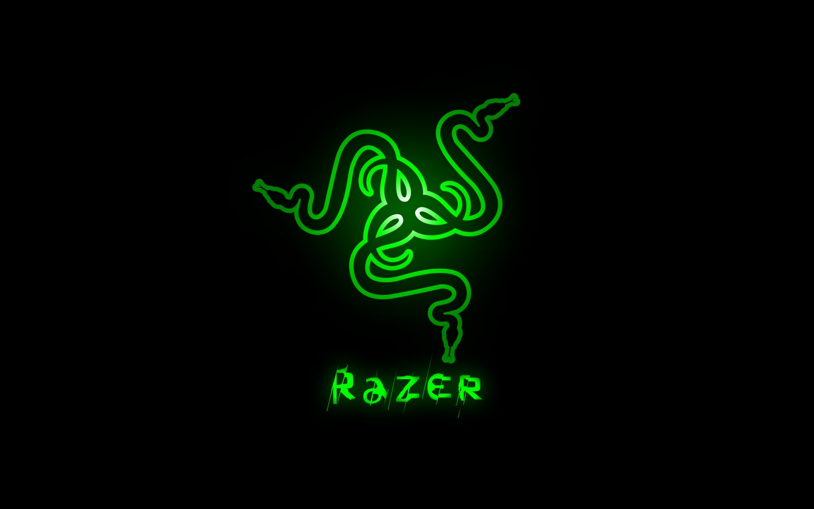

 Razer™ is the world’s leading lifestyle brand for gamers. Razer’s award-winning products include an array of hardware and software. Among its signature products are high-performance PC and console peripherals, the Razer Blade line of gaming laptops, software services such as Razer Cortex (a game optimizer and launcher), and zGold (a virtual currency and payment engine for gamers). The company additionally provides audiovisual certification and IP development services through its subsidiary THX Ltd. Founded in 2005 and headquartered in San Francisco, Razer is backed by Digital Grid, Intel Capital, IDG-Accel and Temasek.
 Focused on innovation and quality, Logitech designs personal peripherals to help people enjoy a better experience with the digital world. We started in 1981 with mice, which (new at the time) provided a more intuitive way of interacting with a personal computer. We became the worldwide leader in computer mice, and have reinvented the mouse in dozens of ways to match the evolving needs of PC and laptop users.
Focused on innovation and quality, Logitech designs personal peripherals to help people enjoy a better experience with the digital world. We started in 1981 with mice, which (new at the time) provided a more intuitive way of interacting with a personal computer. We became the worldwide leader in computer mice, and have reinvented the mouse in dozens of ways to match the evolving needs of PC and laptop users.
Taiwan’s Information Technology industry has grown enormously over the last few decades and the country is now a dominant force in the global market. ASUS has long been at the forefront of this growth and while the company started life as a humble motherboard manufacturer with just a handful of employees, it is now the leading technology company in Taiwan with over 12,500 employees worldwide. ASUS makes products in almost every area of Information Technology too, including PC components, peripherals, notebooks, tablets, servers and smartphones.